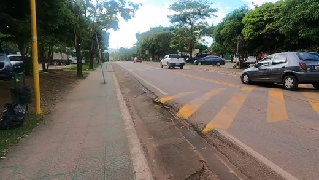

00:00:25.880
Calçada arborizada junto à avenida, com carros e faixas amarelas no asfalto.
Centro de Parauapebas (PA) · confirmado
O apresentador situa o início do roteiro no centro da cidade e anuncia a visita a dois mirantes.
Transcrição · 00:00:06 | 00:00:22 | 00:00:30
Turismo Aqui — quadro de vídeo publicado no YouTube